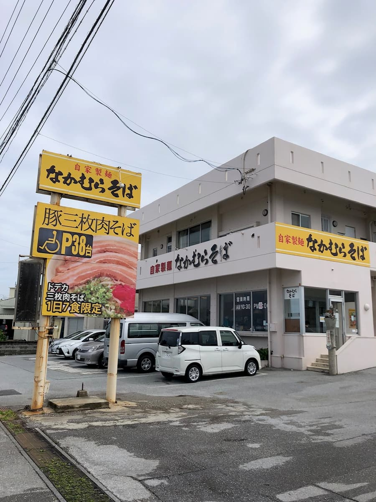
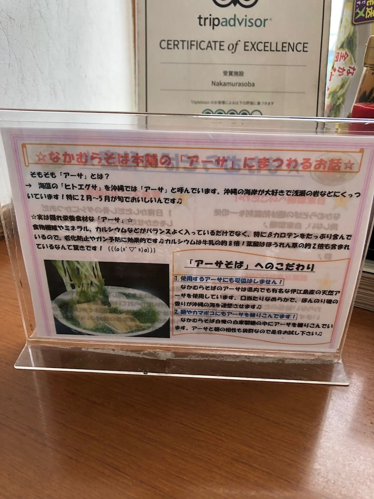
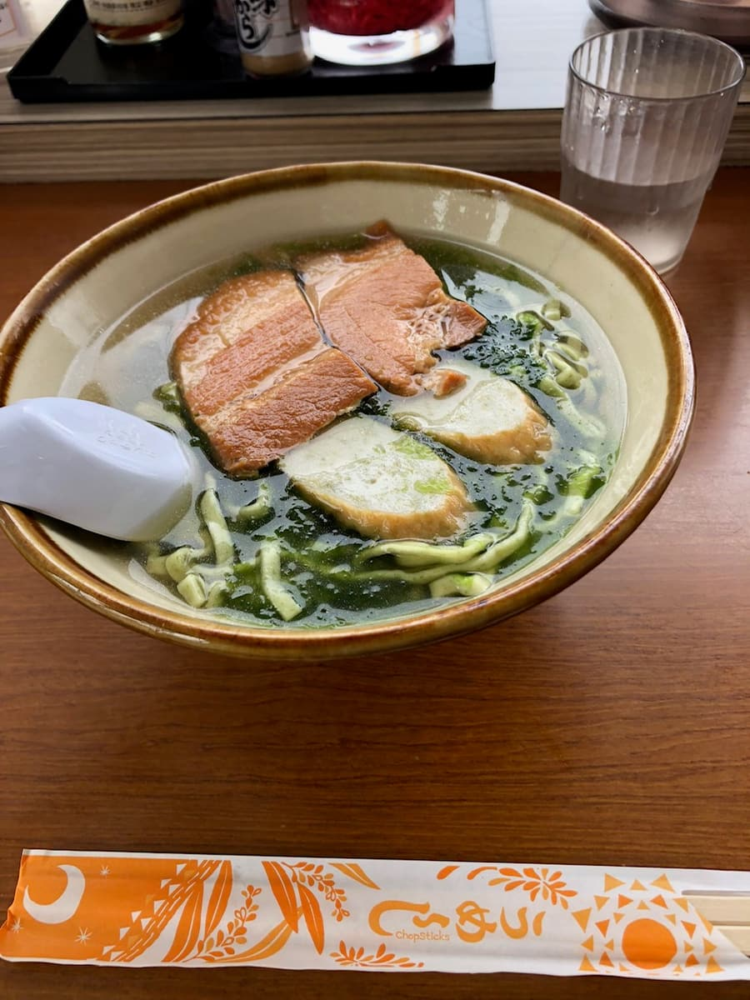
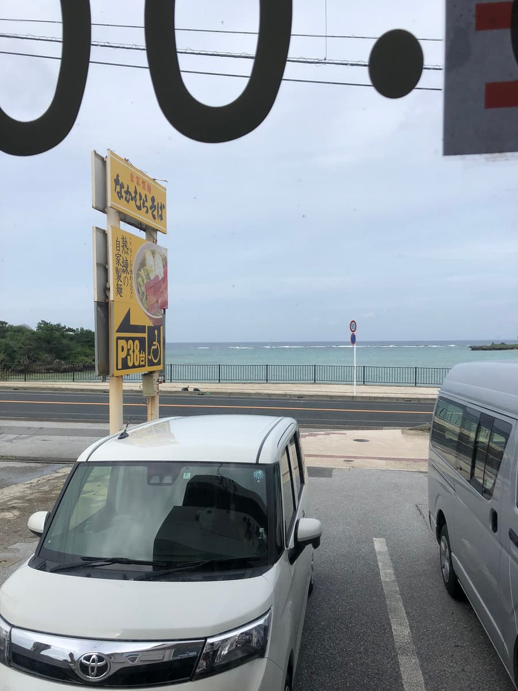

一开始是在名护市内吃遍冲绳面店，后来在社群网站上看到有人介绍说很好吃，就去了国道58号沿线恩纳村的「中村面」看看（2022年11月）。

这里也是人气店，很快就会排队，所以提早去了。总算没遇到大排长龙就进到店里了哈哈
点了店内推荐的「石莼面」。石莼在冲绳很常见。石莼味噌汤、清汤、石莼天妇罗也都很好吃呢。说起来，「石莼」是冲绳对海藻「礁膜」的称呼。附着在冲绳海岸浅滩的岩石上，好像２月～５月是产季，很好吃。
富含膳食纤维、矿物质、钙质，尤其含有大量β胡萝卜素，好像对防止老化和预防癌症也有效果。钙质约是牛奶的８倍，叶酸约是菠菜的２倍（根据店内资讯）。这说不定就是以前冲绳人长寿第一的秘诀？哈哈

首先喝一口汤。这里也是柴鱼基底的高汤味很足，很好喝。喝下去的瞬间就是至今的店都没有的美味。面是细面，面和鱼板里都揉入了石莼，是其他店没有的巧思和美味。三层肉也很软很好吃。我觉得汤头、面、配料的平衡，在我至今吃过的冲绳面店中是名列前茅的。

坐在窗边吃，所以是一边看海一边吃冲绳面✌ 恩纳村的海只要天气好就会变成漂亮的翡翠绿，时机对的话，味道和景色都是最棒的。

评分（13.5分/15分）：哎呀，虽然我暂且帮每家店排了名次，但味道并没有差到非常多，也有个人喜好的因素，所以我觉得跟第１名只有些微差距。这次吃的是「石莼面」，下次想吃吃看外面招牌上写的「超大三层肉面 每天限量７份」🤤 不早点去好像吃不到。
面：★★★★✬（4.5）
汤头：★★★★✬（4.5）
配料：★★★★✬（4.5）